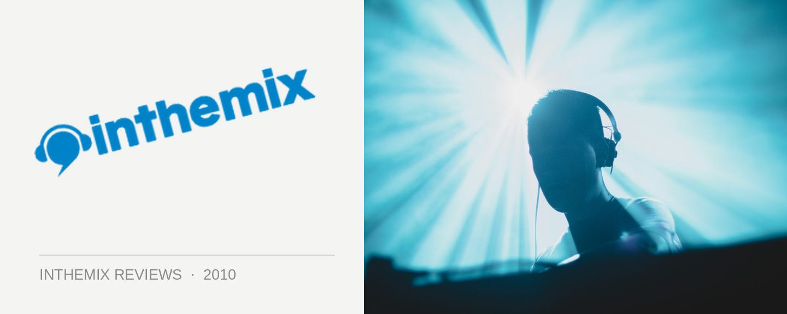

Tiesto 'Kaleidoscope' @ Hordern Pavillion, Sydney (29/01/10)
CHECK OUT ALL THE EPIC PHOTOS FROM TIESTO’S FIRST SHOWS IN AUSTRALIA!
Personally, I’d never been wholeheartedly won over by the charms of Tiesto. I’d enjoyed the stunning productions he’d put his name to early in his career, but later he’d tended to waft towards what felt to me like overcooked euro melodrama, and his approach to DJing was always a little too ‘loose’ for my liking alongside the super-refined approach of titans like Armin van Buuren. This opinion mattered little though – somehow, the man they know as Tiesto managed to build the sort of enigma around him that arguably smashes anyone else working in dance. It was this enigma that sent the Australian dance community into a communal meltdown when his 2008 tour was announced; but on the flip of the coin, this same personal investment earned him howls of derision when he dared step outside his box on his Kaleidoscope album last year. Collaborating with Sneaky Sound System …How dare he? Me on the other hand, I totally bought his electro/pop/trance hybrid, which still had it’s roots in the classic Tiesto sound as far as I was concerned. So it was with an open mind that I checked out the debut show on his massive nine-date ‘Kaleidoscope’ tour of Australia last Friday night.
After Grant Smillie warmed up the crowd gathered in the Hordern Pavillion with a perfectly serviceable opening set, Tiesto hit the stage to much grandeur around 11pm with Kaleidoscope, the opening track off his new album. Showcasing the fantastic vocals of Sigur Ros frontman Jonsi, it’s a tune that’s so good that it even made it into Sasha’s recent Boiler Room sets. As those rising synths kicked in, so too did the stupendous visual screens setup behind the DJ booth. We didn’t even know they were there while Smillie was warming up, but damn they were big, taking up the whole back of the Hordern and making the space feel a lot bigger than it usually does. Beaming out graphics of hi-speed intergalactic travel, it eventually settled on a CG rendering of the big man himself – before he hit the stage, welcomed with a roar of approval as he launched into the Laidback Luke rerub of his driving classic Flight 643. Massive.
The first portion of the fairly epic four-hour set was a vocal-heavy affair, very ‘pop’ with more than a few cuts off the new album (including the notorious Sneaky Sound System collaboration that rubbed so many ITMers up the wrong way). However, even if you weren’t bowled over by Tiesto’s new direction, in a ‘concert’ setting it made plenty of sense, ably assisted by a show that was seriously well thought out – it really brought the whole Kaleidoscope ‘experience’ to life. Visually, it was all colourful ‘80s pastiche, with a retro-esque video game aesthetic, as opposed to all the overused trance imagery we saw on the Elements of Life tour a few years ago back (though all the air/water/fire stuff would make a reappearance later in the show). Whenever a track off the album was dropped, it’d be accompanied by its visual equivalent on the LCD screens. If you think of it less as standard a DJ set, and more a themed audio-visual ‘concert’ of the kind that bands like U2 and Nine Inch Nails boot up everytime they record an album and hit the road, then you’ll have a good idea.
One of the best moments of the opening two hours came with Tiesto’s Escape Me; as C.C. Sheffield’s guest vocals began to ring out, the lyrics began scrolling out across the screens, otherwise dominated by in-your-face fluro colours, and they were joined shortly by Sheffield herself. Flouncing around, animated in a stuttery fashion to look like she’d leapt straight out of a graphic novel. Again, it was very ‘pop’, but it was also pretty damn cool. A sizable selection of tunes from Kaleidoscope were recreated in a similar fashion (I was cajoled into a karaoke-style singalong during the extremely catchy Calvin Harris collab Century not long after, oh the shame), with the massive screens and heavy-duty lighting syncing perfectly with the music. It’s hard to know exactly how this was achieved. Was Tiesto playing off DVDs? Was he pulling off some kind of laptop-assisted trickery, or shock horror… playing a completely pre-planned set? Ultimately though, I wasn’t bothered. Whatever he was doing it, it looked fabbo.
The sounds during those first few hours were pretty much in line with what Tiesto delivered on Kaleidoscope – a sort of electro/pop/trance hybrid with lots of vocals, big synths stabs and pumping electro basslines. And as the night moved on, we got increasing doses of ‘grunt’, with a few extra servings of ‘oomph’. It was pumping, the basslines were heavy duty and it was lots of fun. Again, a lot of trance purists would have been dry retching at how out of sync it was with the Tiesto they knew and loved, but for me – it was a far cleverer and engaging show than what we saw with Elements of Life a few years ago.
Looking around from time to time, it was fairly obvious it wasn’t a crowd made up of dance music enthusiasts. Plenty of sweaty, shirtless guys and dolled up ladies stumbling around in high heels, it was definitely one of the most (if not the most) mainstream crowd I’ve been amongst at such a large-scale dance event. Witness the method that Tiesto employed to really get a response out of them – at one point he dropped Benny Benassi’s remix of Red Hot Chilli Peppers’ Otherside. Beginning as these remixes often do with a fairly innocuous electro bassline, for the punters it was business as usual – until John Frusciante’s familiar guitar riff kicked in. At that moment, a wave of hysteria swept through the grandstands I was sitting in. People leaping out of their seats, fists pumping, eyes wide with looks of utter exhilaration on their faces. Fuck man, I know this one! Isn’t it Red Hat Chilli Pappas or something? It was hysterical, and nearly as entertaining as the splashy visuals lighting up the LCD screens. Snobbery aside, it’s a testament to the appeal of Tiesto that it stretches so far beyond your average dance obsessive.
Strolling outside for a bit of fresh air at one stage, when I walked back in it’d been transformed into a dramatic, hands-in-the-air trance session, the kind that Tiesto made his name with, wrapping it up over the next hour or so in what made for a really nice progression to the evening (it would have placated his old fans a little too). Lasers were out in force and the vibe was euphoric, pitching up even higher when he began slamming out his anthems in the last 30 minutes. Suburban Train made an appearance (blowing me away at how good it still sounds nearly a decade later), followed by that ol’ chestnut Silence. Overplayed anthems usually make me nauseous, but at this stage of the night it was perfect. As the buildup reached its crescendo, the visual screens locked onto Tiesto, his arms raised in a Jesus pose as the crowd roared. Epic.
For fans wishing that Tiesto had kept his feet firmly in the past, the ‘Kaleidoscope’ show would probably have been their very worst nightmare. For me though (and with most of the crowd, as far as I could see), I thoroughly enjoyed what we got on Friday night. A whole lot of bangin’ electro/trance/pop with a few hands-in-their air moments towards the end, set to a spectacularly produced arena-style show that delivered in spades. Tiesto is dead. Long live Tiesto.
CHECK OUT ALL THE EPIC PHOTOS FROM TIESTO’S FIRST SHOWS IN AUSTRALIA!